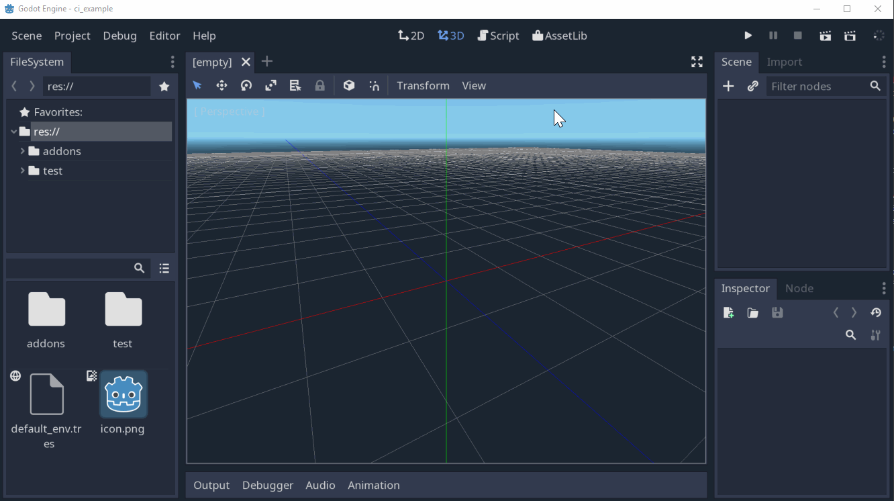

Run automated tests for your Godot game on CI
Nov 26, 2018 · CommentsGames development
Automated testing in gamedev
Nowadays, most people agree that automated testing is absolutely crucial for all software development. Not so much when it comes to games development though. I still believe that the games industry would be able to iterate and ship faster by introducing unit and integration testing in the right places.
Godot and Gut
Butch Wesley appears to be onboard, considering he created Gut, an automated testing framework for the Godot Game Engine. Gut provides you with a collection of utilities to write and run tests for your game. Out of the box you get basic assertions, test doubles and even full node tree simulation. Tests are run either from the Godot Editor or the command line using the godot executable itelf.
However, what good are automated tests if we exclusively rely on developers running them locally? The answer is: not very good at all.
Dead simple Godot CI pipeline
That is why I experimented with running GDScript tests on a Continuous Integration pipeline using the headless Godot runtime. I created a repo godot-ci-example you can copy to use on your own projects. Here is how it works.
Firstly, create a Godot project, install Gut from the Asset Library and enable it. This is the same as what is explained in Gut’s Install and Command Line wiki pages.

Create a trivial test in res://test/unit/test_example.gd.
extends "res://addons/gut/test.gd"
func test_assert_true_with_true():
assert_true(true, "Should pass, true is true")
You can now run these tests from the command line.
godot -d -s --path ./project addons/gut/gut_cmdln.gd -gdir=res://test -ginclude_subdirs -gexit
Where godot is your Godot binary and project is the folder where your game lives.
Alright, we now have a basic test setup we can run locally. Let’s move onto the meaty part of the article, continuous integration. I’ll be using Travis CI because it’s easy and free for open source projects hosted on Github, but knock yourself out with your CI system of choice.
Travis looks for a .travis.yml file in the root of your repo. This file tells Travis how to build the project and run tests. I recommend you take a quick look at the docs.
The .travis.yml file is trivial.
language: minimal
script: ./run_tests.sh
The run_tests.sh script will download the headless Godot runtime and run the command we showed above. Make sure run_tests.sh has executable permissions.
GODOT_VERSION=3.0.6
GODOT_BIN=Godot_v${GODOT_VERSION}-stable_linux_headless.64
GODOT_ZIP=${GODOT_BIN}.zip
GODOT_URL=https://downloads.tuxfamily.org/godotengine/${GODOT_VERSION}/${GODOT_ZIP}
curl ${GODOT_URL} --output ${GODOT_ZIP}
unzip ${GODOT_ZIP}
chmod +x ${GODOT_BIN}
./${GODOT_BIN} -d -s --path ./project addons/gut/gut_cmdln.gd -gdir=res://test -ginclude_subdirs -gexit
As you can see, it’s also pretty easy to parameterize which Godot version you want to use.
And that’s it! You can get a cool “Build passing” badge for your repo. Here’s what a typical build would look like.
/-----------------------------------------
Running Script res://test/unit/test_example.gd
-----------------------------------------/
* test_assert_true_with_true
*****************
Run Summary
*****************
*** Totals ***
scripts: 1
tests: 1
passing asserts: 1
failing asserts: 0
pending: 0
+++ 1 passed 0 failed. Tests finished in: 0.0 +++
Happy testing!